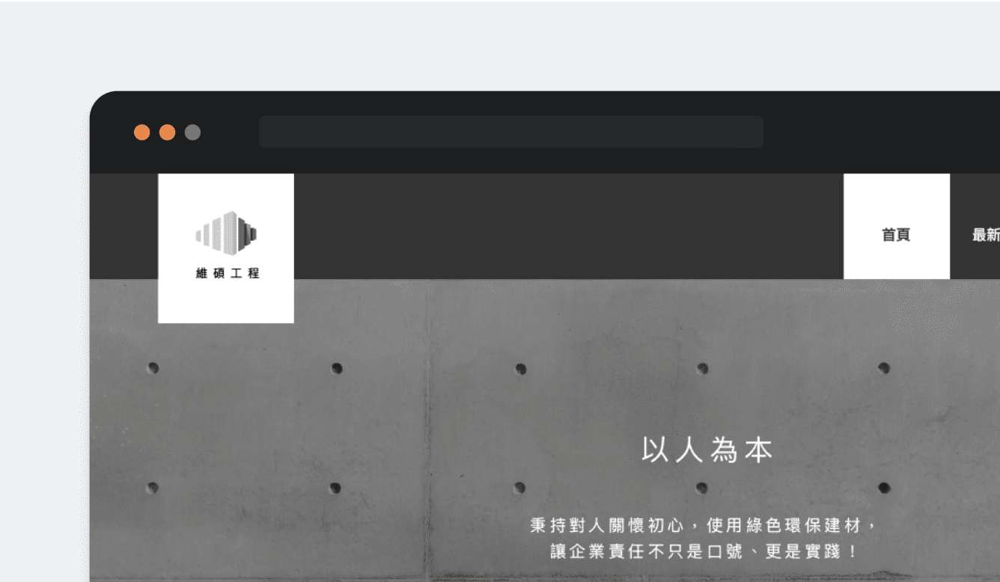
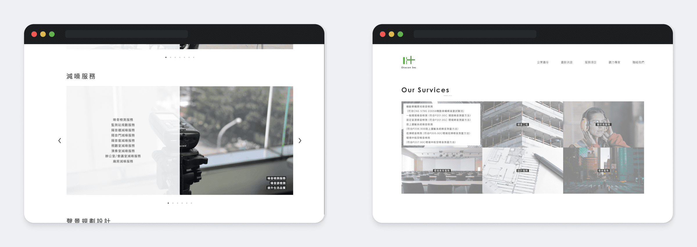
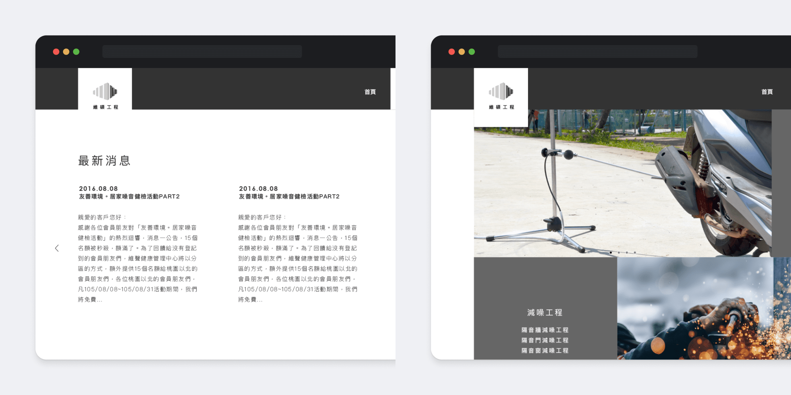
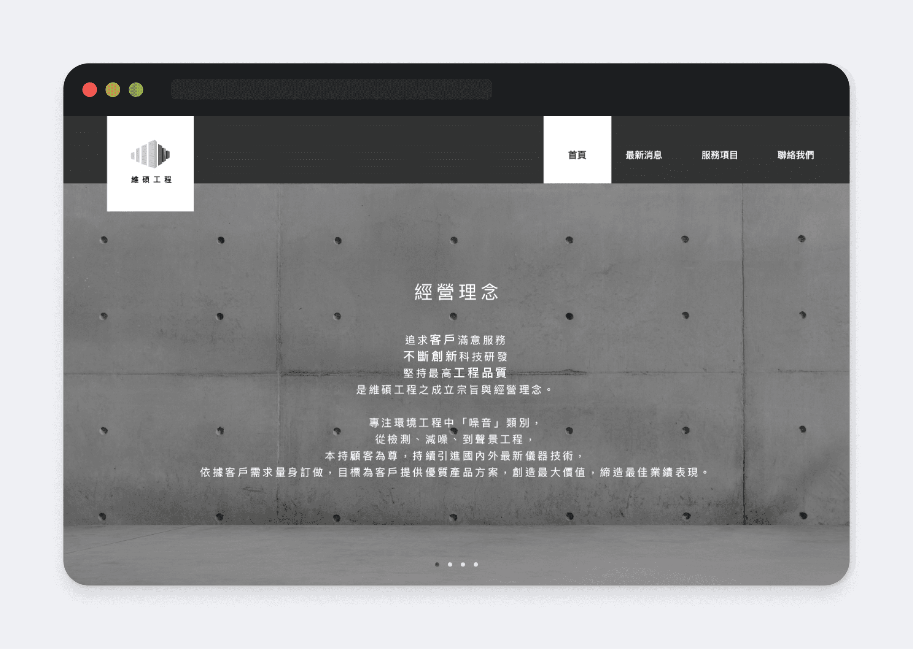

維呈顧問 噪音防制專家
Type Website Design 網頁設計 / Logo DesignProject Backgrounnd
維呈公司是以生產耳塞為主的公司，其旗下有三個定位不同的子公司，分別是維呈顧問 Otocon、維聲健康管理 Otohear、維碩工程
Otoeng。這個專案是要為維呈顧問股份有限公司以及維碩工程股份有限公司製作介紹網站。另外也為維聲健康管理和維碩工程製作了 Logo。
Otohear Logo Design
維聲健康管理中心致力於打造美好聲活環境的目標，以此作為設計出發點，將城市生活意象與聲音圖案結合於 logo 設計當中。
Otoeng Logo Design

Otocon Website Design
維呈顧問 Otocon 的網頁設計期望給人專業清新的形象，因為有許多噪音檢測實際操作的照片需要放在網站上，因此網頁整體以黑白簡約顏色為主，以襯托出照片內容，而詳細說明文字則用 hover 的方式顯示。

Otoeng Website Design
維碩工程 Otoeng 的網頁設計因為是純工程性質的子公司，因此設計呈現則改用比較穩重、紮實感覺的深灰色，為了讓子公司的網站設計呈現連貫一致的感覺，在特定元件呈現上採用想同的方式，例如圖片 hover
顯示詳細說明文字。

